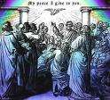

యేసు అనుచరులు సువార్తను వ్యాప్తి చేస్తారు

పవిత్ర ఆత్మ యొక్క బహుమతి
యేసు తన పునరుత్థానం తర్వాత తన శిష్యులకు కనిపించిన నలభై రోజులలో, వారికి వాగ్దానం చేయబడిన పరిశుద్ధాత్మ బహుమతిని పొందే వరకు యెరూషలేమును విడిచిపెట్టవద్దని ఆయన వారికి చెప్పాడు. (యోహాను 14:16) అపొస్తలుల కార్యములు పుస్తకంలోని రెండవ అధ్యాయంలో, యేసు అనుచరుల కథనాన్ని మనం చదువుతాము: వాళ్ళందరూ ఒకచోట చేరారు, అకస్మాత్తుగా వారు ఒక బలమైన గర్జనను విన్నారు, హింసాత్మకమైన గాలి అంతటా వీస్తుంది. వారు ఉంటున్న ఇల్లు. ప్రతి వ్యక్తిపై మంటలు కనిపించిన వాటిని వారు చూశారు! ఆ సమయంలో, వారందరూ పరిశుద్ధాత్మతో నింపబడ్డారు.
ఆత్మ యొక్క ఈ నింపడం వలన వారందరూ ఇతర భాషలలో మాట్లాడటం మొదలుపెట్టారు. (చట్టాలు 2:4)
యేసు అనుచరులు ఈ విధంగా ఆత్మతో నింపబడినప్పుడు, యూదుల పండుగలలో ఒకదానిని జరుపుకోవడానికి ఇజ్రాయెల్ చుట్టూ ఉన్న దేశాల నుండి వేలాది మంది ప్రజలు జెరూసలేంకు వచ్చారు. (అపొస్తలుల కార్యములు 2:8-11లో మీరు ఈ దేశాల జాబితాను చదవగలరు.) అద్భుతంగా, ఈ సందర్శకుల్లో ప్రతి ఒక్కరు యేసు అనుచరులు తమ స్వంత భాషలో యేసుక్రీస్తు ద్వారా రక్షణ సువార్తను చెప్పడాన్ని వినగలిగారు!
శిష్యుడు, పీటర్, ఎటువంటి తప్పు చేయని సిలువ వేయబడిన యేసు దేవుని కుమారుడనే దాని గురించి ప్రత్యేకంగా కదిలించే ప్రసంగం చేశాడు. మోక్షం యేసు ద్వారా వస్తుందని అతను ప్రజలకు చెప్పాడు. ఆ రోజున 3,000 మందికి పైగా ప్రజలు యేసును మెస్సీయగా మరియు తమ రక్షకునిగా అంగీకరించారని పేతురు చెప్పిన మాటలకు గుంపులో ఉన్న చాలామంది కదిలిపోయారు!
ఈ రోజు నిజంగా యేసు విశ్వాసుల చర్చి ప్రారంభాన్ని సూచిస్తుంది; ఆ కొత్త విశ్వాసులందరూ తమ స్వదేశాలకు వెళ్లి తమ స్నేహితులు మరియు కుటుంబ సభ్యులందరికీ యేసు ద్వారా మోక్షం గురించి చెప్పడం గురించి ఆలోచించండి! చర్చి మొదటగా పిలవబడిన "ది వే"ని అనుసరిస్తున్న వ్యక్తుల సంఖ్య, ఇప్పుడు మధ్యప్రాచ్యం మరియు మధ్యధరా ఐరోపా అని పిలువబడే ప్రాంతాలలో వేగంగా పెరగడం ప్రారంభమైంది. అపొస్తలుల కార్యముల పుస్తకం, యేసు అనుచరులు రక్షణకు సంబంధించిన శుభవార్తను ఎలా వ్యాప్తి చేశారనే కథ.

మార్పిడి మరియు ప్రక్షాళన
యెరూషలేములో శిష్యులు పరిశుద్ధాత్మతో నిండి ఉన్నారని గుర్తుంచుకోండి మరియు యేసు గురించి ప్రజలకు చెప్పడానికి జెరూసలేం చాలా కోపంగా ఉంది: అన్నింటికంటే, ఇక్కడే యేసు సిలువ వేయబడ్డాడు. యేసును హత్య చేసిన యూదు నాయకుల నుండి హింస ఇప్పుడు కొత్త మరియు పెరుగుతున్న యేసు అనుచరుల సమూహంపై దృష్టి సారించింది.
స్టీఫెన్, యేసు యొక్క శుభవార్త యొక్క బహిరంగ బోధకుడు, సువార్త బోధించినందుకు చంపబడిన మార్గం యొక్క మొదటి అనుచరుడు. (చట్టాలు 6:8-7:60)
అత్యంత నాటకీయ మార్పిడి
యేసు మాక్ ట్రయల్కు నాయకత్వం వహించిన కయఫా మరియు ఇతర పూజారులతో పాటు, జీసస్ అనుచరులందరినీ తుడిచిపెట్టడమే తన జీవిత పనిగా చేసుకున్న మరొక ఉత్సాహభరితమైన యూదుడు కూడా ఉన్నాడు. ఆ వ్యక్తి పేరు తార్సుకు చెందిన సౌలు.

సౌలు జెరూసలేంలోని ఆలయ పూజారుల నుండి అనుమతిని అభ్యర్థించాడు మరియు అతను ది వేలో విశ్వసించే యూదులను చుట్టుముట్టడానికి మరియు జైలులో పెట్టడానికి అనుమతి పొందాడు.
సౌలు నిజానికి డమాస్కస్ నగరానికి ప్రయాణిస్తున్నప్పుడు యేసును విశ్వసించేవారి కోసం అక్కడి సమాజ మందిరాన్ని వెతకడానికి పరలోకం నుండి ఒక అద్భుతమైన కాంతి అతని చుట్టూ ప్రకాశించింది. అతను నేలమీద పడి, "సౌలా, నన్ను ఎందుకు హింసిస్తున్నావు?" అని ఒక స్వరం అతనిని అడగడం విన్నాడు. (చట్టాలు 9:1-19)
"నీవెవరు?" సౌలు అడిగాడు. యేసు స్వయంగా సౌలుతో మాట్లాడుతున్నాడు. ప్రతిచోటా ఉన్న అన్యజనులకు (యూదుడు కాని వారెవరైనా) యేసుక్రీస్తు గురించిన శుభవార్తను తెలియజేయడానికి దేవుడు సౌలును ఎన్నుకున్నాడు. (చట్టాలు 9)
సౌలు ది వేలో విశ్వాసి అయ్యాడని యేసు యూదు అనుచరులు విన్నప్పుడు, వారు నమ్మలేకపోయారు! అతను వారి చెత్త వేధించేవారి నుండి వారి అత్యంత అనర్గళమైన బోధకులలో ఒకరిగా మారడం చాలా నమ్మశక్యం కాదు. సౌలు నిజంగా మార్చబడ్డాడని యూదు విశ్వాసులలో చాలామంది విశ్వసించడానికి చాలా కాలం గడిచింది. అతను గతంలో చేసిన అన్నిటికీ వారు ఇప్పటికీ అతనికి భయపడుతున్నారు.
సౌలు అన్యజనుల మధ్య తన బోధనా పరిచర్యను ప్రారంభించినప్పుడు, అతను తన పేరు యొక్క రోమన్ రూపాన్ని ఉపయోగించడం ప్రారంభించాడు: పాల్. (సౌల్ అతని పేరు యొక్క యూదు రూపం).
పాల్ యేసు సువార్తను వ్యాప్తి చేయడానికి వేల మైళ్లు ప్రయాణించాడు. మీరు అపొస్తలుల కార్యములు (అపొస్తలుల కార్యములు 11:25-అపొస్తలుల కార్యములు 28)లో అతని ప్రయాణాల గురించి చదవవచ్చు. యేసు గురించి బోధించడం మరియు బోధించడం వల్ల అతను చాలా హింసను అనుభవించాడు. చివరికి, అతను అరెస్టు చేయబడి రోమ్లో ఖైదు చేయబడ్డాడు. కొత్త నిబంధనలో సేకరించిన అనేక ఉత్తరాలను యూరప్లో చెల్లాచెదురుగా ఉన్న చర్చిలకు పాల్ తన జైలు నుండి రాశాడు. పాల్ యొక్క మార్పిడికి ధన్యవాదాలు, యేసు అనుచరులకు ఉపదేశాన్ని మరియు ప్రోత్సాహాన్ని, నిరీక్షణను మరియు హామీని ఇచ్చే గ్రంథం మన వద్ద ఉంది. పౌలు లేఖలను చదవడమంటే యేసు అనుచరునిగా ఎలా జీవించాలో నేర్చుకోవడమే.